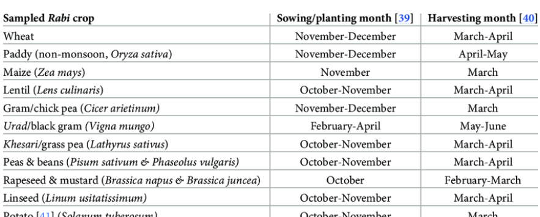
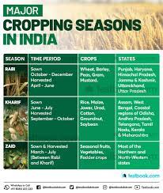

. The important kharif crops of the district are rice, vari and nachani (finger millet). The pulses like Urad, moong and kulith are also grown in this season. Rice is the main crop of the district:
requirement
Rice is grown under varying conditions in India from 8° to 25° N latitude and from sea level to about 2,500 metre altitude. It is a tropical plant and requires high heat and high humidity for its successful growth. The temperature should be fairly high at mean monthly of 24°C. It should be 20°- 22°C at the time of sowing, 23°-25°C during growth and 25°-30°C at the harvesting time. The average annual rainfall required by rice is 150 cm.
It is the dominant crop in areas of over 200 cm annual rainfall and is still an important crop in areas of 100-200 cm rainfall. The 100 cm isohyet forms the limit of rice in rainfed areas. In areas receiving less than 100 cm annual rainfall, rice can be grown with the help of irrigation, as is done in Punjab, Haryana and western U.P. About 40 per cent of rice crop in India is raised under irrigation.
Methods of Rice Cultivation:
1. Broadcasting method:
Seeds are sown broadcast by hand. This method is practised in those areas which are comparatively dry and less fertile and do not have much labour to work in the fields. It is the easiest method requiring minimum input but its yields are also minimum.
2. Drilling method:
Ploughing of land and sowing of seeds is done by two persons. This method is mostly confined to peninsular India.
3. Transplantation method:
This method is practised in areas of fertile soil, abundant rainfall and plentiful supply of labour. To begin with, seeds are sown in nursery and seedlings are prepared. After 4-5 weeks the seedlings are uprooted and planted in the field which has already been prepared for the purpose. The entire process is done by hand. It is, therefore, a very difficult method and requires heavy inputs. But at the same time it gives some of the highest yields.
Rice Cropping Seasons in India:

Cereals - Jowar, Bajra, Wheat & Rice. Bajra, Rice, Paddy, Jowar & also cotton and Groundnut are some of the major kharif crops grown in Nashik District. This is the main crop in the eastern part, especially in Malegaon, Baglan, Yeola, Nandgaon, Deola and Chandwad Talukas:
- Ghat Zone
- Transitional zone
- Scarcity zone
- Rainfall zone
Climate & Soil Requirement
Cotton, a semi-xerophyte, is grown in tropical & sub tropical conditions. A
minimum temperature of 15oC is required for better germination at field conditions. The
optimum temperature for vegetative growth is 21-27oC & it can tolerate temperature to
the extent of 43oC but temperature below 21oC is detrimental to the crop. Warm days of
cool nights with large diurnal variations during the period of fruiting are conducive to
good boll & fibre development.
Cotton is grown on a variety of soils ranging from well drained deep alluvial soils
in the north to black clayey soils of varying depth in central region and in black and
mixed black and red soils in south zone. Cotton is semi-tolerant to salinity
Irrigation Scheduling
Depending upon the climate & crop-growing period, cotton needs 700-1,200 mm
water to meet its maximum water requirement. The water requirement is low during first
60-70 days after sowing & highest during flowering & boll development.
Cotton is commonly flood irrigated although irrigation by furrow or alternate
furrow method is more effective and water saving. Drip irrigation is becoming popular
particularly in the hybrids for central and southern zones. Cotton needs to be irrigated at
50-70% depletion of available soil moisture. On sandy loam soils of northern zone 3-5
irrigations are commonly given. On red sandy loam soils of Tamil Nadu with low water
retention capacity, 4-13 light irrigations may be necessary.
Croping season in India

Main crops are rabbi jawar, cotton, wheat, gram, groundnut and sanflower and also sugarcane in canal areas.
Favourable soil type for groundnut cultivation
Select well-drained, sandy loam soil, well supplied with calcium and a moderate amount of organic matter. In Orissa, such soil is found in flood receded river valleys of the coastal districts. These soils are ideally suited to rainfed rabi groundnut. The optimum soil pH for groundnut is 6.0 to 6.5, but a range of 5.5 to 7.0 is acceptable.
Irrigation method of groundnut-
t is advisable to sow the crop with pre-sowing irrigation, or else apply one post sowing irrigation to facilitate germination. Subsequently, provide irrigation at 10-15 days interval depending upon soil and weather conditions. The critical growth stages for irrigation are flowering, pegging and pod formation. Early season stress at the vegetative stage is helpful for uniform flowering. In flat bed method of sowing, apply irrigation in cross channels made at an interval of 4-5 meter.
WATER REQUIREMENT
roundnut is relatively tolerant to drought as far as survival is concerned but its pod yield reduction is very high if proper soil moisture is not maintained especially during critical growth stages (flowering, pegging of pod development)
The amount of water used by the crop is determined by the potential evapo-transpiration during the crop period and the degree of soil cover. The water requirement reaches a maximum during flowering and continues up to pod formation. * Groundnut requires on an average 400-500 mm of water but it varies with soil type, agro-climates and genotype.
Total rainfall to a tune of 400-600 mm, well-distributed over the entire growth period during kharif results in good yield.
During rabi/summer, the water use has been found to be 450-830 mm depending upon soil type and agroclimatic conditions.
<
Quality of irrigation water
Quality of irrigation water is the most important factor to decide the source of irrigation water. The water from different sources viz., rivers, canals, wells, lakes, tanks and drainage channels are being used for irrigating the crop.
The river and canal water generally has low to medium salinity and low sodic hazard. The ground water is mostly saline or sodic or both. Rainwater is considered very good for irrigation because it contains very little of salts.
The principal cations present in water are calcium, magnesium and sodium with small quantities of potassium. The main anions are carbonate, bicarbonate, chloride and sulphate with nitrate, fluride and boran occurring in low concentrations. The concentration and composition of dissolved salts in water determines its quality of irrigation water.
Groundnut is very sensitive to saline water from germination to pod formation and only in later phases, it may tolerate somewhat higher salinity of irrigation water. The limits for saline water for groundnut are EC 4.00 mmhos/cm and residual sodium carbonate (RSC) 2 meq/lit.
There are four important parameters, which determine the quality of irrigation water.
The main crops under cultivation in the area are paddy, finger millet, common millet, pigeon pea and black gram:
Crop & Crop cultivation
Net sown (under
cultivation) area of the district is 109291 ha. whichis
14.00%of the total geographical area of thedistrict.
Rice is major crop grown in the district. While,
Nagali&Warai are the other cereals grown in the
district. According to agricultural censesthetotal area
undercereals was 90.00%. The total area undetpulses
was 7.00%. Major Pulses grown are Udid, Tur, Red
Gram & Bengal Gram. Area under Oil seedsis very
low in compare to otherdistricts.